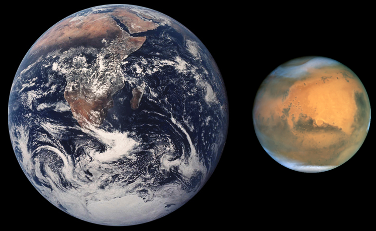
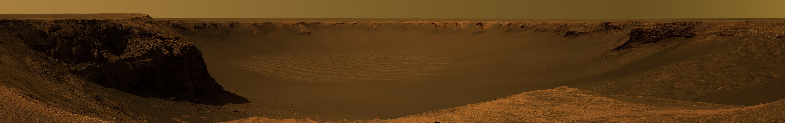

Marte es el cuarto planeta en orden de distancia al Sol y el segundo más pequeño del sistema solar, después de Mercurio. Recibió su nombre en homenaje al homónimo dios de la guerra de la mitología romana (Ares en la mitología griega), y también es conocido como «el planeta rojo»[3][4] debido a la apariencia rojiza[5] que le confiere el óxido de hierro predominante en su superficie. Marte es el planeta interior más alejado del Sol. Es un planeta telúrico con una atmósfera delgada de dióxido de carbono, y tiene dos satélites pequeños y de forma irregular, Fobos y Deimos (hijos del dios griego), que podrían ser asteroides capturados[6][7] similares al asteroide troyano (5261) Eureka. Sus características superficiales recuerdan tanto a los cráteres de la Luna como a los valles, desiertos y casquetes polares de la Tierra.
El periodo de rotación y los ciclos estacionales son similares a los de la Tierra, ya que la inclinación es lo que genera las estaciones. Marte alberga el Monte Olimpo, la montaña y el volcán más grande y alto conocido en el sistema solar, y los Valles Marineris, uno de los mayores cañones del sistema solar. La llana cuenca Boreal en el hemisferio norte cubre el 40 % del planeta y puede ser característica de un gigantesco impacto.[8][9] Aunque en apariencia podría parecer un planeta muerto, no lo es. Sus campos de dunas siguen siendo mecidos por el viento marciano, sus casquetes polares cambian con las estaciones e incluso parece que hay algunos pequeños flujos estacionales de agua.[
Las investigaciones en curso estudian la habitabilidad pasada del planeta y su potencial para albergar vida en la actualidad. Se planean futuras investigaciones astrobiológicas, entre ellas, la Mars 2020 de la NASA y ExoMars de la ESA.[11][12][13][14] El agua en estado líquido no puede existir en la superficie de Marte debido a su baja presión atmosférica, que es unas 100 veces inferior a la de la Tierra,[15] excepto en las zonas menos elevadas durante cortos periodos de tiempo.[16][17] Sus dos casquetes polares parecen estar formados en su mayor parte por agua.[18][19] El volumen de agua helada del casquete polar sur, si se derritiera, sería suficiente como para cubrir la superficie planetaria al completo con una profundidad de 11 metros (36 pies)
Características físicas

Marte es ligeramente elipsoidal, con un diámetro ecuatorial de 6794.4 km y polar de 6752.4 km (aproximadamente la mitad que la Tierra), y una superficie total algo inferior a la de las tierras emergidas de nuestro planeta.[25] Medidas micrométricas muy precisas han mostrado un achatamiento tres veces mayor que el de la Tierra, con un valor de 0.01. A causa de este achatamiento, el eje de rotación está afectado por una lenta precesión debida a la atracción del Sol sobre el abultamiento ecuatorial del planeta. La precesión lunar, que en la Tierra es dos veces mayor que la solar, no tiene su equivalente en Marte.
Con este diámetro, su volumen es un 15 % del terrestre y su masa aproximadamente un 11 %. En consecuencia, la densidad de Marte es menor a la de la Tierra y la gravedad de Marte es un 38 % de la gravedad terrestre. La apariencia rojo-anaranjada de su superficie se debe al óxido de hierro III o herrumbre.[27] Puede parecer color tofe, y también de otros colores como dorado, marrón, beige o verdoso, dependiendo de los minerales presentes en su superficie.[
Estructura interna:
Al igual que la Tierra, Marte tiene diferenciados un denso núcleo metálico recubierto por materiales menos densos.[29] Los modelos actuales sugieren un núcleo con un radio de aproximadamente 1794 ± 65 kilómetros), consistente principalmente en níquel y hierro con aproximadamente un 16-17 % de azufre.[30] Se cree que este núcleo de sulfuro de hierro (II) contiene el doble de elementos ligeros que el de la Tierra.[31] El núcleo está rodeado por un manto de silicato donde se formaron muchas de las características tectónicas y volcánicas del planeta, ahora en estado latente. Junto con el silicio y el oxígeno, los elementos más abundantes en la corteza de Marte son hierro, magnesio, aluminio, calcio y potasio. El grosor medio de la corteza del planeta es de unos 50 km, con un grosor máximo de 125 km. El grosor medio de la corteza de la Tierra es 40 km.[
Geología

Marte es un planeta rocoso compuesto por minerales que contienen silicio, oxígeno, metales y otros elementos que normalmente componen las rocas. La superficie de Marte está compuesta principalmente por basalto toleítico[32] con un alto contenido en óxidos de hierro que proporcionan el característico color rojo de su superficie. Por su naturaleza se asemeja a la limonita, óxido de hierro muy hidratado. Así como en las cortezas de la Tierra y de la Luna predominan los silicatos y los aluminatos, en el suelo de Marte son preponderantes los ferrosilicatos. Sus tres constituyentes principales son, por orden de abundancia, el oxígeno, el silicio y el hierro. Contiene: 20.8 % de sílice, 13.5 % de hierro, 5 % de aluminio, 3.8 % de calcio, y también titanio y otros componentes menores.[cita requerida] Algunas zonas son más ricas en sílice que en basalto y pueden ser similares a las rocas andesitas de la Tierra o al vidrio de sílice. En partes de las zonas montañosas del sur hay cantidades detectables de piroxenos de alto contenido en calcio. Se han detectado también concentraciones localizadas de hematitas y olivinos.[33] La mayor parte de su superficie está profundamente cubierta de polvo de grano fino de óxido de hierro (III).[
Marte es un planeta notablemente más pequeño que la Tierra. Sus principales características, en proporción con las del globo terrestre, son las siguientes: diámetro 53 %, superficie 28 %, masa 11 %. Como los océanos cubren alrededor del 70 % de la superficie terrestre y Marte carece de ellos, ambos planetas poseen aproximadamente la misma cantidad de superficie pisable.
Aunque en Marte no hay evidencias de una estructura global de campo magnético,[36] partes de la corteza planetaria muestran evidencias de haber estado magnetizadas, lo que sugiere la alternancia de inversión de polaridad de su campo dipolar en el pasado. Este paleomagnetismo de minerales susceptibles magnéticamente es similar al de las franjas alternas halladas en los fondos oceánicos terrestres. Una teoría, publicada en 1999 y revisada en octubre de 2005 (con ayuda de la Mars Global Surveyor), es que estas franjas sugieren actividad de la tectónica de placas de Marte hace 4000 millones de años, antes de que la dínamo planetaria dejara de funcionar y el campo magnético del planeta se desvaneciese.
Se cree que Marte se creó, durante la formación del sistema solar, como resultado de un proceso estocástico de acumulación de material del disco protoplanetario que orbitaba alrededor del Sol. Marte tiene muchas características químicas peculiares debido a su posición en el sistema solar. Elementos con puntos de ebullición relativamente bajos, como el cloro, el fósforo y el azufre, son mucho más comunes en Marte que en la Tierra; estos elementos fueron probablemente expelidos por el enérgico viento solar del joven Sol.[